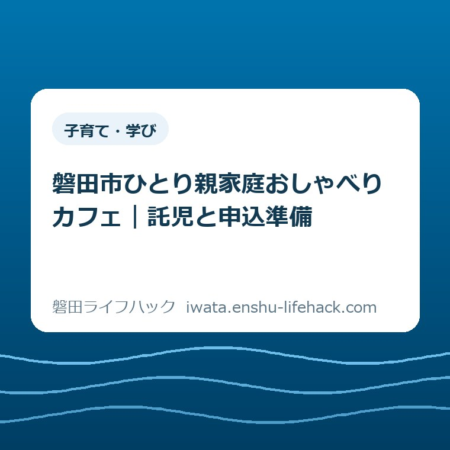
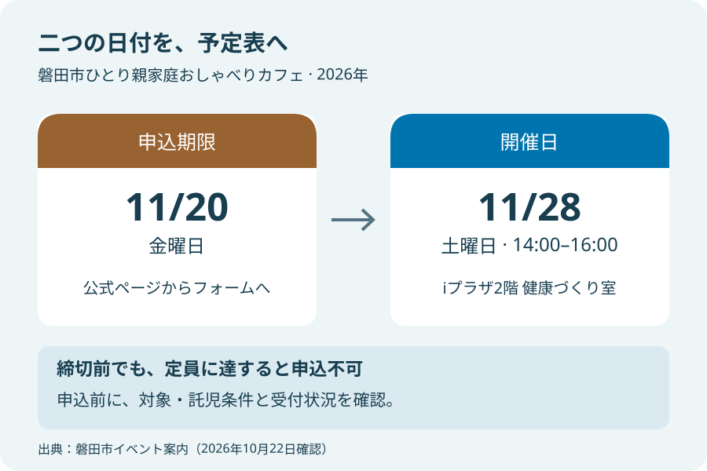
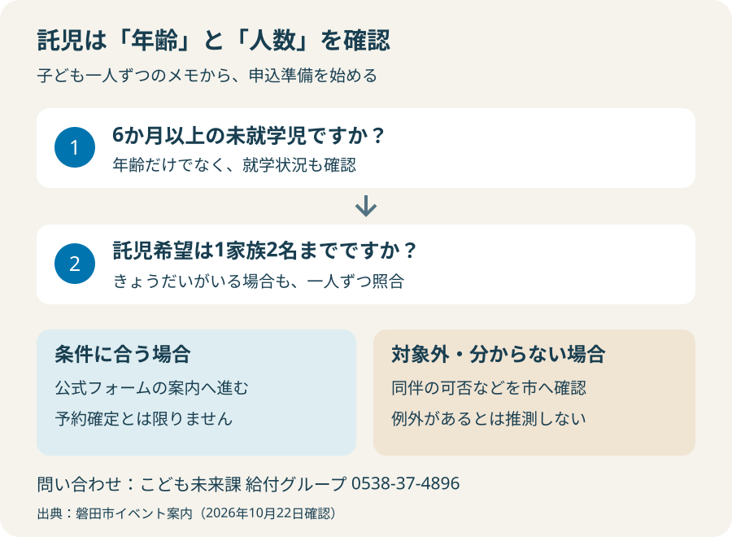

子育て・学び
磐田市ひとり親家庭おしゃべりカフェ｜託児と申込準備

この記事の要点
Q. 子どもを預けて参加するには、何を確認して申し込めばよい？
A. 対象は磐田市在住のひとり親家庭の母親です。11月28日14～16時、iプラザ2階で開催。11月20日までに公式ページのフォームで申し込みます。託児は6か月以上の未就学児、1家族2名まで。家庭ごとに条件を照合し、不明点は申込前に市へ確認してください。
参加費より先に、予定と預け先を確かめる
ひとり親家庭おしゃべりカフェへの参加条件や託児の使い方は、家庭の状況で確認する点が変わります。今回の対象は磐田市在住のひとり親家庭の母親です。「ひとり親向けだから自分も対象」「託児があるから子どもを全員預けられる」と一括りにはできません。この記事では、2026年11月28日の回に申し込むための準備を整理します。
土曜日の午後に二時間出かける。そのために仕事の予定を見直し、子どもの昼食や昼寝を考え、きょうだいの居場所を探す。案内に書かれた開催時間の外側にも、参加する人の仕事があります。無料の催しでも、その段取りが無料で済むわけではありません。まず、その手間を前提に置いておきたいと思います。
私は大石浩之（磐田市／不動産業）です。宅地建物取引士として、この街で家や暮らしに関わっています。ここでは参加者の体験談や講座の効果を紹介するのではなく、市の公表内容と、私が考える準備の順番を分けて書きます。参加を急がせることより、申し込めるかどうかを自分で確かめられることを目指します。
今日の一歩は、子ども一人ずつの年齢と、託児を希望する人数をメモすることです。全ての予定を一度に決める必要はありません。そのメモを公式の託児条件と並べると、申し込みへ進める部分と、市に聞いてから決める部分が分かれます。
開催日と申込期限は、別の日として予定表へ
磐田市の「ひとり親家庭おしゃべりカフェ」は、2026年11月28日（土曜）の午後2時から午後4時までです。会場はiプラザ2階の健康づくり室。市公式ページは2026年10月9日更新で、この記事では10月22日に本文を照合しました。以前の回の案内ではなく、今回の日付と対象で判断してください。
申込みは必要で、期限は2026年11月20日（金曜）です。公式ページ内の参加申込みフォームを使います。開催日の11月28日と締切の11月20日には8日間の差があります。予定表へ開催日だけ登録すると、参加したいと思った時には受付期限を過ぎている可能性があります。二つの日付を別々に残すと見落としを減らせます。
市が案内する参加定員は10名程度、参加費は無料です。ただし、定員に達している場合は申込みできないとの注意があります。締切まで日があることと、受付枠が残っていることは別です。この記事では空き人数を確認していないため、「まだ申し込める」「必ず参加できる」とは書けません。
内容は、日頃の悩みや困りごと、仕事や趣味、子どもとの出来事などを話すおしゃべり会です。加えて、SOMPOひまわり生命保険株式会社のライフカウンセラーによる「シングルマザーのためのお金の基礎講座」が予定されています。給付金の申請会や、個別の家計相談の予約とは区別しておく必要があります。
申込みの入口は市公式のおしゃべりカフェ案内にあります。先に案内の日付と対象を確認し、そのページからフォームへ進むのが私の勧める順番です。検索で見つけた過去の案内や、転送された画像だけで申込条件を決めないためです。

託児は「年齢」と「人数」を一人ずつ照合する
今回の託児は、6か月以上の未就学児が対象で、1家族2名までと案内されています。「託児スペースあり」という一言だけでは、この二つの条件は読み取れません。子どもの年齢と就学状況、希望人数を分けて確認することが、申込み準備の中心になります。
例えば、未就学児であっても6か月未満の子どもは、掲載された託児対象には含まれません。小学生も未就学児ではありません。年齢の条件を満たす子どもが3人いる場合も、1家族2名までという人数の条件が残ります。これは個別家庭への判定ではなく、案内文を読むための例です。
子どもが複数いる場合は、家族全体を一つの欄で考えず、一人ずつ書き出すと整理しやすくなります。「年齢」「未就学かどうか」「託児を希望するか」の三項目で十分です。自分の手元のメモに病歴や詳しい家庭事情まで書き込む必要はなく、問い合わせに必要な範囲から始められます。
掲載条件に当てはまらない子どもを会場へ同伴できるか、別の場所で過ごせるかについては、案内本文だけでは判断できません。「預けられないなら一緒に座ればよい」と推測して予定を組むのは避けたいところです。同伴の可否や過ごし方は、市の担当へ申込前に確認してください。
託児中の持ち物、食事やおやつの扱い、預ける時刻、体調不良になった場合の連絡方法も、今回照合した案内本文では具体的に示されていません。これらは持参を求められている品の一覧ではなく、必要に応じて聞く項目です。普段通っている園のルールを、そのまま今回の託児へ当てはめないことも大切です。
市の問い合わせ先は、こども未来課の給付グループ、電話0538-37-4896です。情報発信元欄の受付時間は午前8時30分から午後5時15分。会場であるiプラザの施設案内には、行政機関は土日祝日も休業と記載されています。土曜の催しだから相談窓口も土曜に開いている、とは考えず、問い合わせの時間も別に確保します。
問い合わせるなら、「11月28日のカフェに参加を考えています。子どもは○歳と○歳です。託児を○人分希望しますが、この条件で利用できますか」と要点をまとめられます。続けて、対象外のきょうだいの同伴など、自分の家庭で参加を決めるために必要な点を一つ聞く。これは公式の必須文面ではなく、私が考える聞き方の例です。

iプラザへ行く時間と、帰る時間も分けて考える
iプラザは磐田市国府台57-7にあります。市のiプラザ施設ガイドでは、駐車場は133台、うち障がい者等用7台と案内されています。この台数は施設の駐車場情報であり、カフェ参加者専用の確保台数ではありません。当日の空きを保証する数字としては使えません。
バスでのアクセスは、「南高校」バス停から徒歩5分と施設ガイドに記載されています。子どもを連れて歩く時間や、バスを待つ時間は家庭ごとに変わります。案内の徒歩時間だけを足して出発時刻を決めず、使う便と帰りの便を交通事業者の最新案内で確かめてから予定を組んでください。
催しの終了予定は午後4時です。その時刻に家へ戻れるわけではなく、子どもを迎え、身支度をし、移動する時間が続きます。夕方に別の用事がある場合は、開催時間だけを見て「間に合う」と決めない方がよいでしょう。途中退出の扱いも本文にはないため、必要なら主催側へ確認する項目になります。
イベント会場は2階の健康づくり室ですが、情報発信元の担当窓口は3階と表示されています。同じ建物の中でも行き先が異なります。電話番号を控える欄と、当日に向かう部屋を書く欄を分けておくと、受付場所を取り違えにくくなります。施設の一般的な利用時間と、カフェの開催時間も混同しないようにします。
良い点――会話の場と託児の条件が示されている
私が良いと考えるのは、深刻な相談だけでなく、日常の出来事や趣味も話題として案内されている点です。困りごとを一つの相談案件にまとめる前でも、会話のきっかけを持てる内容になっています。ただし、実際の場の雰囲気や参加後の気持ちまで、開催前の記事で保証することはできません。
参加費が無料で、託児の年齢と人数が明示されている点も、予定を立てる材料になります。費用の情報があると、家計から出す参加費については先に整理できます。もちろん交通費や仕事の調整までなくなるわけではありません。それでも、最初に確認すべき項目が見えることには意味があります。
お金の基礎講座があることも、家計について考える入口を探している方には判断材料になると思います。一方、この案内は講座の実施を伝えるもので、特定の商品や契約を勧める根拠ではありません。講座で得る一般的な情報と、自分の家計について決めることは分けて受け止めたいところです。
おしゃべり会への参加と、生活上の相談をすることは並行して考えられます。仕事や生活費の困りごとがあり、催しの日を待たずに相談先を確かめたい場合は、くらしと仕事相談センターの記事も参考になります。カフェで話せる内容を広げて推測せず、相談先それぞれの役割を確認するためのリンクです。
注文したい点――参加できるか迷う境目も見えると助かる
私が案内に補ってほしいと感じるのは、託児の対象外になるきょうだいがいる場合の確認先と、何を聞けばよいかの具体例です。年齢と人数は書かれていますが、その条件から外れた家庭は、参加自体を諦めるべきか、同伴について相談できるのかで迷います。例外があるとは言えませんが、確認の入口はもう少し見えると助かります。
もう一つは、フォームを送った後の流れです。今回確認した案内本文には、参加決定の連絡方法や連絡時期までは書かれていません。送信した時点で予約が確定するのか、主催側からの返答を待つのか。実際のフォームと案内に従う必要がありますが、本文でも流れが分かると、仕事の予定を確定させる順番を考えやすくなります。
持ち物や託児の引渡しについて、いつ詳しい案内を受けられるかも知りたい点です。全ての情報を募集ページへ詰め込む必要はないと思います。ただ、「申込後に案内する内容」と「申込前に聞く内容」が分かれていると、保護者は同じ質問を繰り返さずに済みます。これは運営の不備という断定ではなく、案内を読む側からの意見です。
参加のための確認を、保護者が全て一人で抱える形にはしたくありません。分からない点を質問してよいことと、問い合わせ先が近くに置かれていること。その小さな工夫が、忙しい合間にページを読む人の手間を減らすと私は考えます。公開されていない運営事情については、この記事から評価しません。
対案・結論――申し込む前のメモは三行でよい
申込前の整理は、短いメモから始められます。第一行に「11月28日14～16時と往復の予定」。第二行に「子どもごとの年齢・就学状況・託児希望人数」。第三行に「参加を決めるために市へ聞くこと」。これは提出書類ではなく、自分が迷っている箇所を見つけるための手元の記録です。
公式フォームで求められる項目は、その時点で表示される内容に従ってください。この記事では入力欄を列挙していません。本人確認書類や所得の証明が必要だといった条件を、一般の支援制度から借りて付け足すこともしません。フォームの説明で分からない点が出たら、送信前に担当へ確かめます。
送信後は、画面に表示された案内や受け取った連絡を読み、次に何をするかを確認します。控えを残す場合も、端末の共有相手などに配慮してください。返信が届かない時の扱いや、変更・取消しの手段は、実際に示された方法に従います。二重送信で解決しようとせず、状況を伝えて問い合わせる方が確認を進めやすいと思います。
子育て中に使える場所を日頃から探している方は、子育て支援センターの利用登録の記事も読めます。ただし、センターの登録と今回のカフェへの申込みは別です。どちらかを済ませればもう一方も予約できる、という案内はありません。用途ごとに入口を分けて考えます。
手当や医療費、養育費の確認が必要な場合は、ひとり親家庭の支援ガイドから該当する市の情報へ進めます。今回のカフェは、その支援制度を利用するための必須手続きとして案内されているものではありません。交流の予定と制度の申請期限は別々に管理してください。
大石の視点――無料でも、参加の手間は残る
私は、参加を勧める言葉より先に、預け先と帰宅までの予定を確かめる方が親切だと考えます。「無料だから行ってみよう」だけでは、仕事と育児を組み替える人の負担が抜け落ちます。家計と段取りから考えるという私の判断基準を、今回はここに置いています。
一方で、事前確認を増やしすぎると、参加を考えるだけで疲れてしまうのではないかという迷いもあります。だから、この記事の全項目を全員が問い合わせる必要はありません。自分の家庭で答えが出ている項目は読み飛ばし、参加を決められずにいる一点を確認すればよいと思います。
今日すぐ申し込むことだけが成果ではありません。子どもの年齢を書いて、託児の条件と照合できた。それも一歩です。日程が合わない、今回は気が進まないという判断もあります。参加の有無で、子育てに向き合う姿勢を測るものではありません。必要な時に戻れるよう、公式ページを手元に残す方法もあります。
よくある質問
子どもは全員、託児に預けられますか？
今回の託児は6か月以上の未就学児が対象で、1家族2名までです。年齢と人数の両方を照合してください。小学生や6か月未満の子ども、3人目以降について利用できるとは案内されていません。対象外のきょうだいを同伴できるかなどは、予定を決める前に市へ確認します。条件が合っても、受付枠の確保を意味するわけではありません。
当日、iプラザへ行くだけで参加できますか？
事前申込みが必要です。2026年11月20日までに市公式ページの参加申込みフォームから申し込みます。開催は11月28日14～16時、iプラザ2階健康づくり室です。定員は10名程度で、定員到達時は申込みできません。空き状況や申込後の案内は公式ページとフォームで確認し、送信だけで参加確定とは判断しないでください。
ひとり親家庭の父親も申し込めますか？
2026年10月9日更新の今回の案内では、対象は「磐田市在住のひとり親家庭の母親」です。父親も参加できるとは記載されていません。過去の開催案内や支援制度一般の対象を、今回の募集に当てはめないでください。参加対象について不明な点や別の相談先を尋ねたい場合は、こども未来課給付グループへ確認できます。
この記事の日時・条件は2026年10月22日に確認した公表情報です。参加可否や利用できる支援は個別条件で変わり、募集内容も変更される場合があります。最後は必ず磐田市公式ページで最新の対象、託児条件、申込状況を確認してください。
参考にした公式情報
- 磐田市「ひとり親家庭おしゃべりカフェ」2026年10月9日更新（2026年10月22日確認）
- 磐田市「iプラザ施設ガイド」2026年6月10日更新（2026年10月22日確認）
最終確認日：2026-10-22 ／ 本記事は公表情報と執筆者の見解を分けて記載しています。制度・数値・公開状況は変更される場合があるため、最新情報は磐田市公式ページでご確認ください。